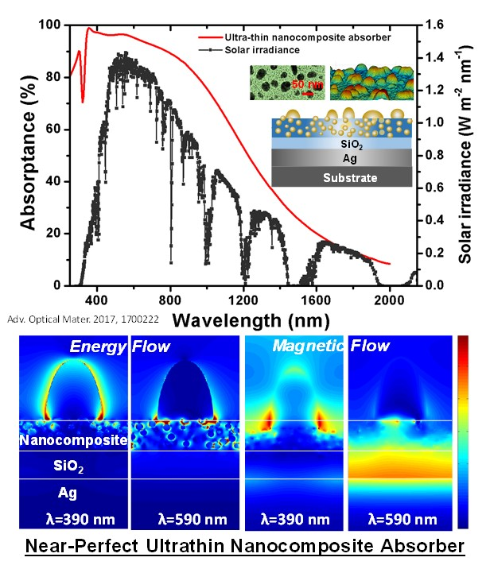

Lu, Chun-Yu (Jin-You)
Postdoctoral Research FellowDepartment of Mechanical Engineering
Khalifa University, Abu Dhabi, UAE
BS ( NTNU-Physics), PhD (NTU-Physics)
I am now a postdoctoral research fellow at Khalifa University. My research interests include nanophotonics, solar energy conversion application, 2D material properties and its application, numerical optical simulations, and quantum physics simulation.
Prior to joining Khalifa University, I was a principal process integration engineer in the Taiwan Semiconductor Manufacturing Company (TSMC). During that period, I got to link the material fabrication and material characterization to the computational physics. Besides, the combination of atomistic quantum physics simulation with macroscopic Multiphysics simulation becomes my toolkit tool and allows the bottom-up realization of material structures that are tailored to deliver the desired device performances.
Recent Highlights
{kind=link}
{kind=link}
{kind=link}
{kind=link}
Recent News
- 11/08/19: Research highlighted in Emirates News (a downloaded pdf)
- 10/30/19: Won the 2019 IEEE Nanotechnology Council’s NMDC Best Poster Award
- 08/25/19: One paper accepted by 2019 Carbon
- 08/06/19: One paper accepted by 2019 Optics Express
- 05/29/19: Two papers accepted by 2019 Journal of Physical Chemistry C
- 05/23/19: Research highlighted in KU Times (a downloaded pdf)
- 05/21/19: One paper accepted by 2019 Nanoscale
- 05/02/19: One paper accepted by 2019 Journal of Physical Chemistry C
- 03/26/19: One paper accepted by 2019 ACS Applied Nano Materials
- 11/27/18: One paper accepted by 2018 Journal of Photonics for Energy
- 07/15/18: One paper accepted by 2018 Journal of Physical Chemistry A
- 09/23/18: One paper accepted by 2018 Langmuir
- 08/07/18: One paper accepted by 2018 Physical Chemistry Chemical Physics
- 04/06/18: One paper accepted by 2018 Joule
- 01/06/18: One paper accepted by 2018 Energies
- 08/26/17: Research highlighted in UAE News (a downloaded pdf)
- 06/13/16: Research highlighted in MIT News (a downloaded pdf)
Recent Talks
- "Density Functional Theory Simulation in Material Science," Invited Talk, Summer Lecture, National Taipei University of Technology, July, 2019
- "Use of Density Functional Theory in the Design and Fabrication of Materials," Invited Talk, PhD Seminar, Khalifa University, December, 2018
- "In Depth Wettability Nano Scale Investigation: Interesting Carbonate Case Study in Society of Petroleum Engineers," Invited Talk, ESG monthly meeting, December 2017
Highlight Publications
- J.-Y. Lu, T. A. Olukan, S. R. Tamalampudi, A. Al-Hagri, C.-Y. Lai, M. A. Almahri, H. Apostoleris, I. Almansouri, and M. Chiesa, "Insights into Graphene Wettability Transparency by Locally Probing its Surface Free Energy," Nanoscale, 11, pp. 7944-7951, Mar. 2019 (IF ~ 6.98)
- X. Q. Li, J. L. Li, J.-Y. Lu, N. Xu, C. L. Chen, X. Z. Min, B. Zhu, H. X. Li, L. Zhou, S. N. Zhu, T. J. Zhang, and J. Zhu, "Enhancement of Interfacial Solar Vapor Generation by Environmental Energy," Joule, vol. 2, no. 7, pp. 1331-1338, Jul. 2018 (IF ~ 15.04)
- J.-Y. Lu, Q. Ge, H. Li, A. Raza, and T. J. Zhang, "Direct Prediction of Calcite Surface Wettability with First-Principles Quantum Simulation," Journal of Physical Chemistry Letters, vol. 8, no. 21, pp. 5309-5316, Oct. 2017 (IF ~ 7.33)(highlighted in Emirates News)
- J.-Y. Lu, A. Raza, S. Noorulla, Afra S. Alketbi, N. X. Fang, G. Chen, and T. J. Zhang, "Near-Perfect Ultrathin Nanocomposite Absorber with Self-Formed Topping Plasmonic Nanoparticles," Advanced Optical Materials, 5, 1700222, Jul. 2017 (IF ~ 7.12)(highted in UAE News)
- J.-Y. Lu, S. H. Nam, K. Wilke, A. Raza, Y. K. Lee, A. A. Ghaferi, N. X. Fang, and T. J. Zhang, "Localized Surface Plasmon Enhanced Ultrathin Film Broad-Band Nanoporous Absorbers," Advanced Optical Materials, vol. 4, no. 8, pp. 1255-1264, May 2016 (IF ~ 7.12)(highlighted in MIT News)
The following are the full list of publications
Click to expand
Journal Papers
- B. Alfakes, J. E. Villegas, H. Apostoleris, R. S. Devarapalli, S. R. Tamalampudi, J.-Y. Lu, J. Viegas, I. Almansouri, and M. Chiesa, "Optoelectronic Tunability of Hf Doped ZnO for Photovoltaic Applications," Journal of Physical Chemistry C, vol. 123, no. 24, pp. 15258-15266, May 2019
- A. Al-Hagri, R. Li, N. S. Rajput, J.-Y. Lu, S. C., K. Sloyan, M. A. Almahri, S. R. Tamalampudi, M. Chiesa, and A. A. Ghaferi, "Direct growth of single-layer terminated vertical graphene array on germanium by plasma-enhanced chemical vapor deposition," Carbon, vol. 155, pp. 320-325, Dec. 2019
- J.-Y. Lu, Q. Ge, A. Raza, and T. J. Zhang, "Quantum Mechanical Prediction of Wettability of Multiphase Fluids-Solid Systems at Elevated Temperature," Journal of Physical Chemistry C, vol. 123, no. 20, pp. 12753-12761, May 2019 (highlighted in KU Times)
- S. R. Tamalampudi, R. Sankar, H. Apostoleris, M. A. AlMahri, B. Alfakes, A. Al-Hagri, R. Li, A. Gougam, I. Almansouri, M. Chiesa, and J.-Y. Lu*, "Thickness-Dependent Resonant Raman and E Photoluminescence Spectra of Indium Selenide and Indium Selenide\Graphene Heterostructures," Journal of Physical Chemistry C, vol. 123, no. 24, pp. 15345-15353, May 2019.
- Md. M. Rahman, A. Raza, H. Younes, A. AlGhaferi, M. Chiesa, and J.-Y. Lu*, "Hybrid graphene metasurface for near-infrared absorbers," Optics Express, vol. 27, no. 18, pp. 24866-24876, 2019
- S. R. Tamalampudi, S. Patole, B. Alfakes, R. Sankar, I. Almansouri, M. Chiesa, and J.-Y. Lu*, "High Temperature Defect-Induced Hopping Conduction in Multi-Layered Germanium Sulfide for Optoelectronics Applications in Harsh Environments," ACS Applied Nano Materials, vol. 2, no. 4, pp. 2169-2175, Mar. 2019.
- J.-Y. Lu, T. A. Olukan, S. R. Tamalampudi, A. Al-Hagri, C.-Y. Lai, M. A. Almahri, H. Apostoleris, I. Almansouri, and M. Chiesa, "Insights into Graphene Wettability Transparency by Locally Probing its Surface Free Energy," Nanoscale, 11, pp. 7944-7951, Mar. 2019
- Afra S. Alketbi, B. Yang, A. Raza, M. Zhang, J.-Y. Lu, Z. Wang, and T. J. Zhang, "Sputtered SiC coatings for radiative cooling and light absorption," Journal of Photonics for Energy, 9(3), 032703, Dec. 2018
- K. Sloyan, C.-Y. Lai, J.-Y. Lu, B. Alfakes, S. A. Hassan, I. Almansouri, M. S. Dahlem, and M. Chiesa, "Discerning the Contribution of Morphology and Chemistry in Wettability Studies," The Journal of Physical Chemistry A, vol. 122, no. 38, pp. 7768-7773, Jul. 2018
- Y.-C. Chiou, T. A. Olukan, M. A. Almahri, H. Apostoleris, C.-H. Chiu, C.-Y. Lai, J.-Y. Lu, S. Santos, I. Almansouri, and M. Chiesa, "Direct Measurement of the Magnitude of van der Waals interaction of Single and Multilayer Graphene," Langmuir, vol. 34, no. 41, pp. 12335-12343, Sep. 2018
- J.-Y. Lu, C.-Y. Lai, I. Almansour, and M. Chiesa, "The evolution in graphitic surface wettability with first-principles quantum simulations: the counterintuitive role of water," Physical Chemistry Chemical Physics, 20, pp. 22636-22644, 2018
- X. Q. Li, J. L. Li, J.-Y. Lu, N. Xu, C. L. Chen, X. Z. Min, B. Zhu, H. X. Li, L. Zhou, S. N. Zhu, T. J. Zhang, and J. Zhu, "Enhancement of Interfacial Solar Vapor Generation by Environmental Energy," Joule, vol. 2, no. 7, pp. 1331-1338, Jul. 2018
- A. Raza, J.-Y. Lu, S. Alzaim, H. Li, and T. J. Zhang, "Novel Receiver-Enhanced Solar Vapor Generation: Review and Perspectives," Energies, vol. 11, no. 1, pp. 253, Jan. 2018 (Invited review)
- J.-Y. Lu, Q. Ge, H. Li, A. Raza, and T. J. Zhang, "Direct Prediction of Calcite Surface Wettability with First-Principles Quantum Simulation," Journal of Physical Chemistry Letters, vol. 8, no. 21, pp. 5309-5316, Oct. 2017
- J.-Y. Lu, A. Raza, S. Noorulla, Afra S. Alketbi, N. X. Fang, G. Chen, and T. J. Zhang, "Near-Perfect Ultrathin Nanocomposite Absorber with Self-Formed Topping Plasmonic Nanoparticles," Advanced Optical Materials, 5, 1700222, Jul. 2017
- J.-Y. Lu, A. Raza, N. X. Fang, G. Chen, and T. J. Zhang, "Effective dielectric constants and spectral density analysis of plasmonic nanocomposites," Journal of Applied Physics, vol. 120, no. 16, 163103, Oct. 2016
- Md. M. Rahman, H. Younes, J.-Y. Lu, G. W. Ni, S. J. Yuan, N. X. Fang, T. J. Zhang, and A. AlGhaferi, "Broadband Light Absorption by Silver Nanoparticles Decorated Silica Nanospheres," RSC Advance, 6, pp. 107951-107959, Nov. 2016
- J.-Y. Lu, S. H. Nam, K. Wilke, A. Raza, Y. K. Lee, A. A. Ghaferi, N. X. Fang, and T. J. Zhang, "Localized Surface Plasmon Enhanced Ultrathin Film Broad-Band Nanoporous Absorbers," Advanced Optical Materials, vol. 4, no. 8, pp. 1255-1264, May 2016
- H. R. Liu, A. Raza, A. Aili, J.-Y. Lu, A. AlGhaferi, and T. J. Zhang, "Sunlight-Sensitive Anti-Fouling Nanostructured TiO2 coated Cu Meshes for Ultrafast Oily Water Treatment," Scientific Reports, 6, 25414, May 2016
- Y. W. Lin, W. J. Chen, J.-Y. Lu, Y. H. Chang, C. T. Liang, Y. F. Chen, and J. Y. Lu, "Growth and characterization of ZnO/ZnTe core/shell nanowire arrays on transparent conducting oxide glass substrates," Nanoscale Research Letters, 7:401, Jul. 2012
- J.-Y. Lu, H. Y. Chao, J. C. Wu, S. Y. Wei, and Y. H. Chang, "Metallic-shell nanocylinder arrays for surface-enhanced spectroscopies," Nanoscale Research Letters, 6:173, Feb. 2011
- H. Y. Chao, S. H. You, J. Y. Lu, J. H. Cheng, Y. H. Chang, and C. T. Wu, "The growth and characterization of ZnO/ZnTe core-shell nanowires and the electrical properties of ZnO/ZnTe core-shell nanowires field-effect transistor," Journal of Nanoscience and Nanotechnology, vol. 11, no. 3, pp. 2042-2046, Mar. 2011
- J.-Y. Lu and Y. H. Chang, "The lightening-rod mode in a core-shell nanocylinder dimer," Optics Communications, vol. 283, no. 12, pp. 2627-2630, Jun. 2010
- J.-Y. Lu, H. Y. Chao, J. C. Wu, S. Y. Wei, Y. H. Chang, and S. C. Chen, "Retardation-induced plasmon modes in silica-core gold-shell nanocylinder pair," Physica E, 42, pp. 2583-2587, Sep. 2010
- J.-Y. Lu and Y. H. Chang, "Implementation of an efficient dielectric function into the finite difference time domain method for simulating the coupling between localized surface plasmons of nanostructures," Superlattices and Microstructures, vol. 47, no. 1, pp. 60-65, Jan. 2010
- H. Y. Chao, J. H. Cheng, J.-Y. Lu, Y. H. Chang, C. L. Cheng, Y. F. Chen, and C. T. Wu, "Growth and characterization of type-II ZnO/ZnTe core-shell nanowire arrays for solar cell applications," Superlattices and Microstructures, vol. 47, no. 1, pp. 160-164, Jan. 2010
- J.-Y. Lu and Y. H. Chang, "Optical singularities associated with the energy flow of two closely spaced core-shell nanocylinders, Optics Communications," Optics Express, vol. 17, no. 22, pp. 19451-19458, 2009
Conference Presentations
- J.-Y. Lu, Md. M. Rahman, and M. Chiesa, "Amorphous Graphene-Based Plasmonic Metasurface for Near-Infrared Absorbers," American Physical Society, Apr. 16-19, 2019, Denver, USA
- J.-Y. Lu, C.-Y. Lai, M. A. Almahri, T. Olukan, H. Apostoleris, I. Almansouri, and M. Chiesa, "Prediction of Surface Wettability of Fresh and Aged Graphite Surfaces from First-Principles Density Functional Theory Simulations," Material Research Society Fall, Nov. 25-30, 2018, USA
- J.-Y. Lu, S. Noorulla, N. X. Fang, and T. J. Zhang, "Design of Broadband Ultrathin Film Nanoporous Solar Absorbers," Micro/Nanoscale Heat & Mass Transfer International Conference, Jan. 1-4, 2016, Biopolis, Singapore
- J.-Y. Lu, A. Raza, N. X. Fang, G. Chen, and T. J. Zhang, "Optical Characterizations of Plasmonic Nanocomposites," The 8th Annual International Workshop on Advanced Materials, Feb. 21-23, 2016, Ras Al Khamiah, UAE
- S. Noorulla, J.-Y. Lu, S. H. Nam, N. X. Fang, and T. J. Zhang, "Plasmon-Enhanced Solar Absorbers," The 8th Annual International Workshop on Advanced Materials, Feb. 21-23, 2016, Ras Al Khamiah, UAE
- A. Alketbi, J.-Y. Lu, and T. J. Zhang, "Design and Performance of Passive Radiative Cooler under Direct Sunlight," The Graduate Students Research Conference, Mar. 20-22, 2016, Al Ain, UAE
- S. Noorulla, J.-Y. Lu, A. Raza, and T. J. Zhang, "Near Perfect Broadband Absorber Based on Random Metal Nanoparticles with Varied Spacer layers," The Graduate Students Research Conference, Mar. 20-22, 2016, Al Ain, UAE
- J.-Y. Lu, D. Liu, K. Wilke, S. Noorulla, N. X. Fang, and T. J. Zhang, "Plasmon-Enhanced Ultrathin Film Broad-Band Nanoporous Absorber," American Physics meeting (ASP), Mar. 2-6, 2015, San Antonio, USA
- J.-Y. Lu, and Y. H. Chang, "," The 14th International Conference on Modulated Semiconductor structures (MSS-14), 2011, Florida, USA
- J.-Y. Lu, H. Y. Chou, J. C. Wu, S. Y. Wei, and Y. H. Chang, "," The 16th International Conference on Superlattices, Nanostructures and Nanodevices, 2010, Beijing, China
- J.-Y. Lu and Y. H. Chang, "," The 9th International Conference on Physics of Light-Matter Coupling in Nanostructures, 2009, Leece, Italy
2D Materials Studies
An ultra-clean interface between graphene and the III-V substrate is required to maintain lattice match for the growth of the single-crystalline of MOCVD deposition, which enables the substrate to be still “observable” from the top thin film deposition. Here, we propose combining bimodal AFM, micro-Raman spectroscopy, and DFT AFM to locally probe surface energy properties on the graphene-coated substrate. In addition to providing quantitative insight into the surface interactions of complicated graphene coatings, this work demonstrates a new route to nondestructively monitor the interface between graphene and coated substrates. The related work has been published in "Nanoscale," which could be accessed here.
The following figure shows that the surface energy of graphene coated substrate produced through exfoliation of natural graphite flakes and chemical vapor deposition are different.
Surface Wettability Studies
A general quantum mechanical approach to predict the macroscopic wettability of any solid crystal surfaces for different liquids directly through atomic-level density functional simulation. As a benchmark, the wetting characteristics of calcite crystal (10.4) under different types of fluids (water, hexane, and mercury), including either contact angle or spreading coefficient, are predicted and further validated with experimental measurements. This approach has been extended to liquid/liquid/solid multiphase systems, several physics quantities, such as the macroscopic contact angles, the work of adhesion at the solid-liquid interface, and the interfacial tension at the liquid-liquid interfaces, can be simultaneously predicted through density functional theory simulation. This opens a new avenue to probe the mechanism of sophisticated wetting phenomena in multiphase systems with direct quantum mechanical simulation. to provides insightful and quantitative predictions of complicated surface wettability alteration problems and wetting behaviors of liquid/liquid/solid triphase systems. The related work has been published in "Journal of Physical Chemistry Letter," which could be accessed here.
The following figure shows that an atomic methodology to directly predict macroscopic contact angle of liquid droplet on crystal substrates.
Interfacial Solar Vapor Generators
For solar steam generation application, the solar absorber coating needs to be integrated into devices for maximizing their efficiency, the structure design can be utilized with Multiphysics solar/thermal simulations. In this work, we analyze the structural designs and evaluate how much environmental energy can be exploited to enhance the performance of an interfacial solar vapor generation device, under various light intensities. This realization has direct implications in various important processes, particularly for wastewater treatment. The related work has been published in "Joule," which could be accessed here.
The following figure shows that Measured and simulated temperature distributions of the vapor generator under three different light intensities.
Plasmonic Nanocomposite Solar Absorbers
Finite difference time domain optical simulation method can provide a guide to design the nanohole and nanocomposite structures, which is potentially an absorptive coating for the high-performance solar absorber. In combination with optical simulation results, a class of scalable ultrathin silver/SiO2 nanocomposite films with self-formed topping plasmonic nanoparticles is designed and fabricated. We experimentally and theoretically demonstrate that just by controlling the high throughput co-sputtering process, the nanocomposite absorbers can achieve near 100% light absorption in the wavelength ranges from 300 to 800 nm. The related work has been published in "Advanced Optical Materials," which could be accessed here.
The following figure shows that Nanocomposites, consisting of metallic nanoparticles embedding in a dielectric host, can significantly enhance light-matter interactions in solar energy conversion and optical applications.
Plasmon Enhanced Nanoporous Absorbers
Ultrathin semiconductor films have attracted much attention due to their strong interference persisting inside the lossy dielectric film on a reflective substrate. We proposed a plasmon-enhanced ultrathin film broadband absorber by combining the ultrathin film absorber with localized surface plasmon resonances. This concept can be realized by patterning nanoholes on an absorber comprised of an absorptive ultrathin Ge film and a reflective Au layer, where the localized surface plasmon mode is activated by metallic pore-shaped holes. The related work has been published in "Advanced Optical Materials," which could be accessed here. The proposed plasmonic broadband ultrathin film absorber can be applied in many applications, such as solar vapor generation,photovoltaics, and solar water splitting.
The following figure shows that a plasmon-enhanced ultrathin film broadband absorber is proposed by combining the ultrathin lossy film absorber with localized surface plasmon resonances, which are activated by pore-shape plasmon resonances.
THANK YOU ALL!
Thank you for all the supports in my entire career:
- XXX, my beloved wife
- XXX, my beloved family
- Yuan-Huei Chang, my PhD advisor
- XXX, my PhD committee
- XXX, my master advisor
- XXX, my roommate during my PhD life
- XXX, UT Austin
- XXX, Duke University
- XXX, NTHU
- XXX, NTU
- XXX, CUHK
- XXX, ARM
- XXX, my roommate at UT Austin
- XXX, my colleague at Citadel LLC
- XXX, my colleague at IBM
- XXX, my colleague at Mentor Graphics
- XXX, my landlord at Austin
- XXX, my colleagues at UIUC CAD group
- XXX, UIUC
- XXX, Google
- XXX, director of VSD
- XXX, NCTU
- XXX, Cadence
- XXX, Intel
- XXXX, U Pitt
- XXX, program manager at DARPA
- XXX, TimberWolf and UT Dallas
- XXX, my Utah Colleague
Research Grants
I am grateful for the following organizations to support my research:
Khalifa University
As a tutor in the following areas:
Multilayer Transfer Matrix Calculations
Finite Difference Time Domain Method
Filmmetric F40 Equipment Measurements
Linux & High Performance Cluster Usage
QuantumEspresso Density Functional Simulation
TSMC
As a teaching group leader in:
CMOS 28 nm Low Power Process Flow
National Taiwan University
As a teaching assistant in the following two courses:
Modern Physics
Modern Physics Experiments